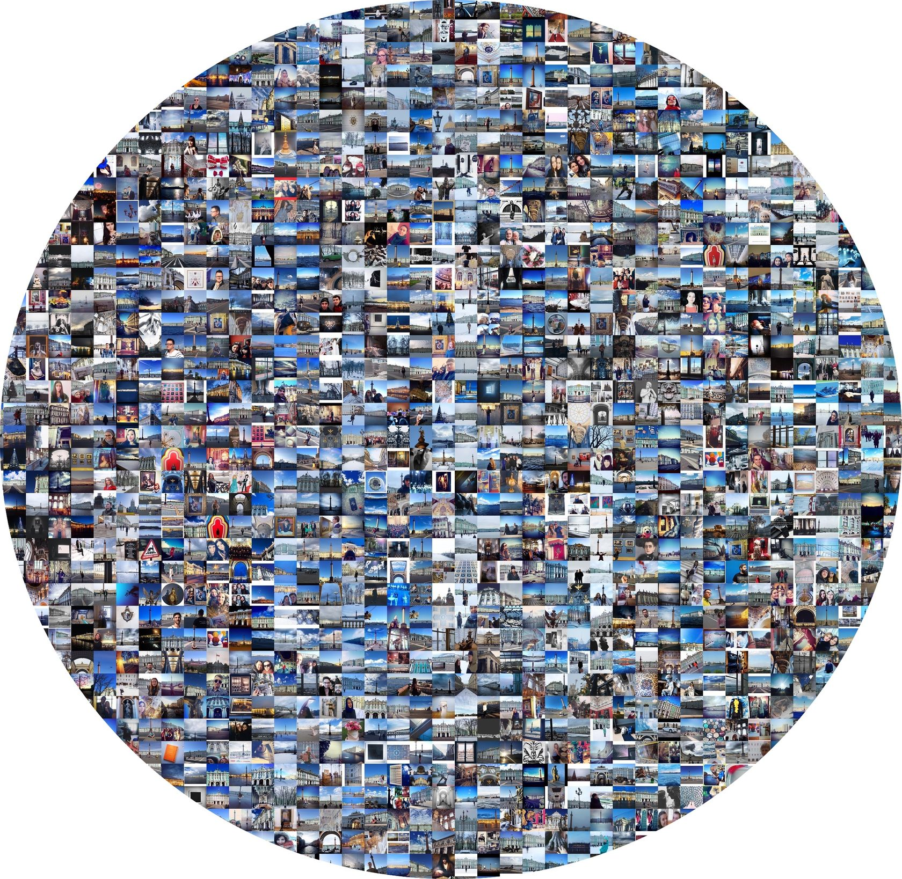
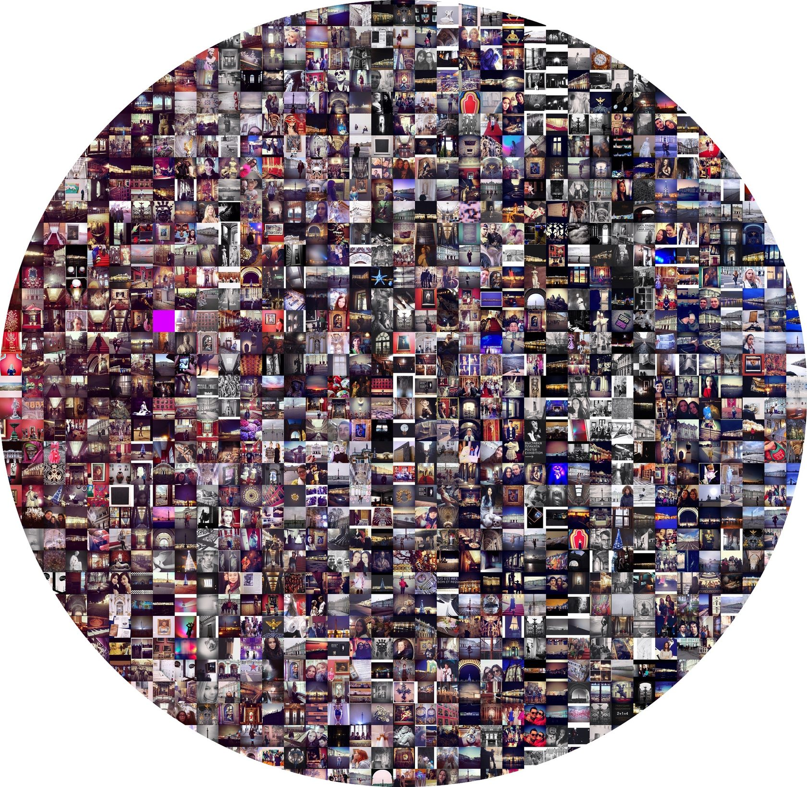
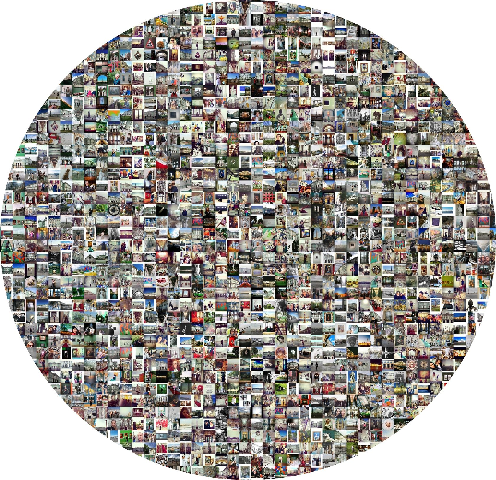
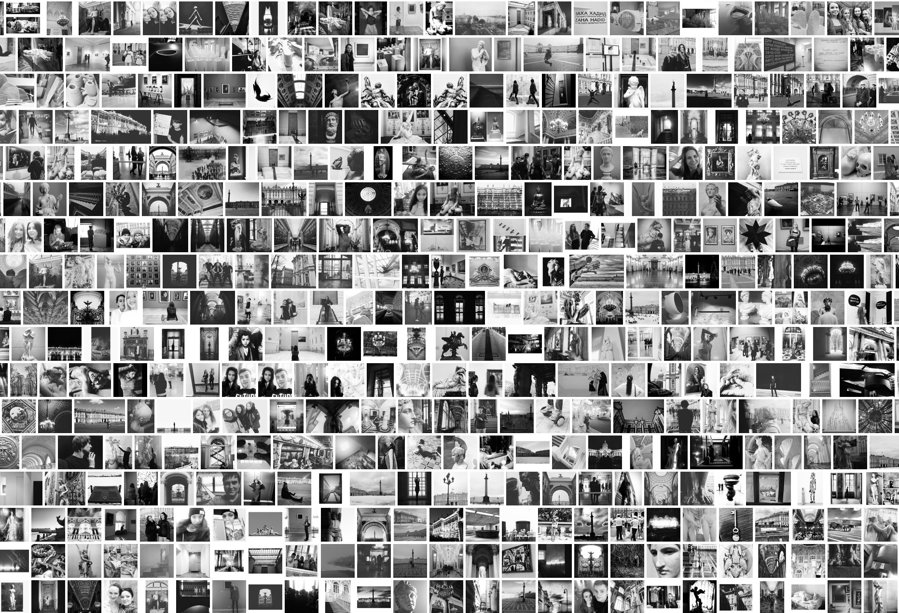
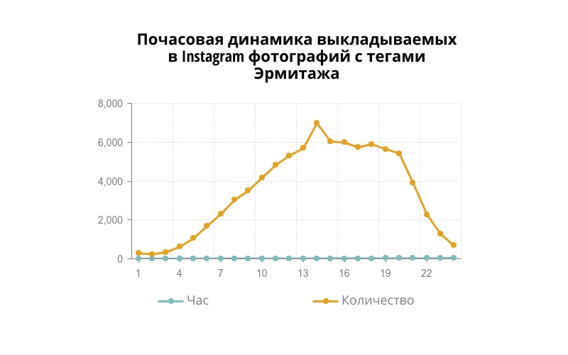
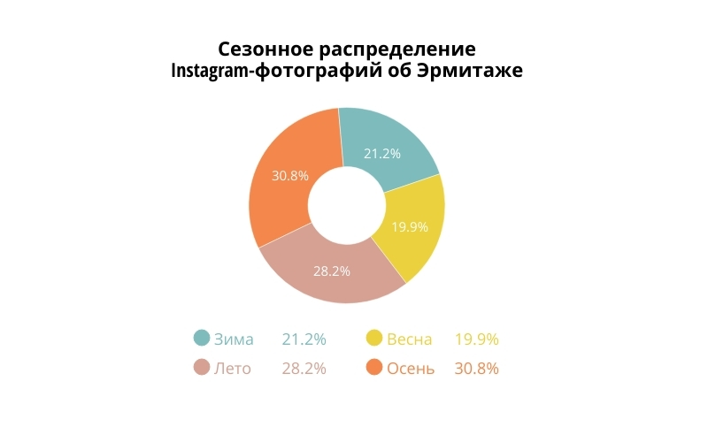
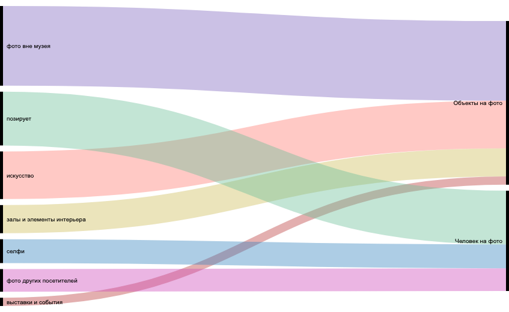
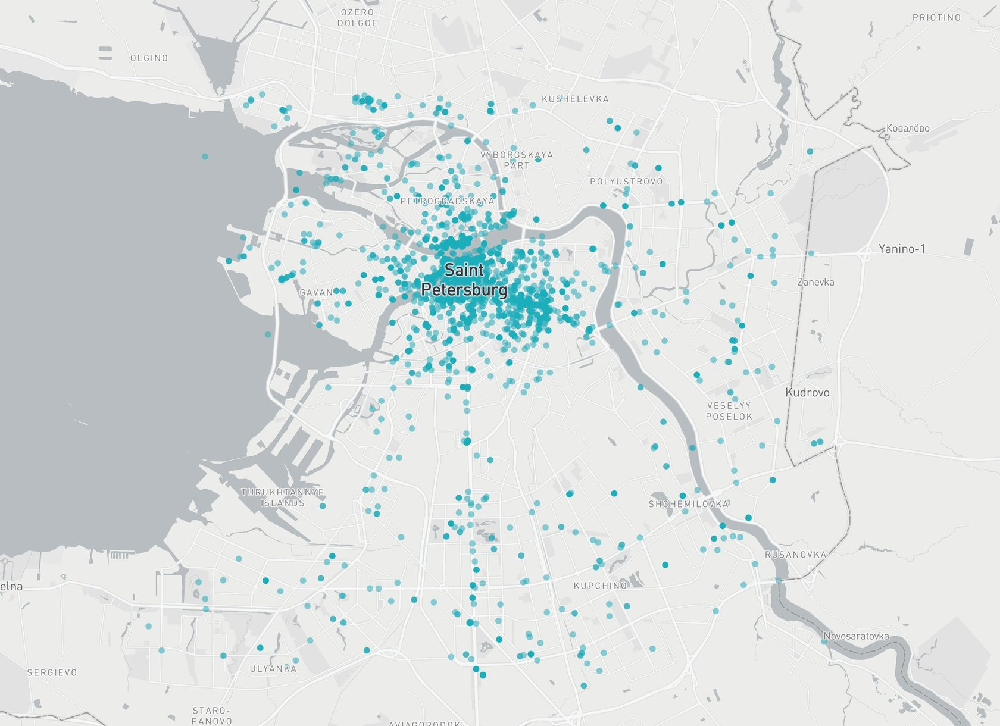
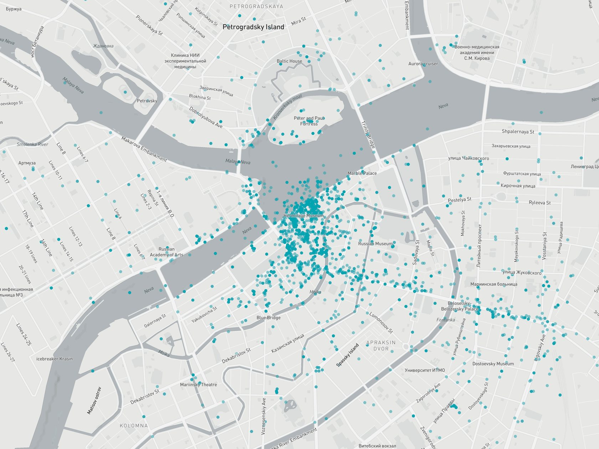

Визуализация данных
Цветовые паттерны
Используя инструменты Cultural Analytics Lab, мы распределили фотографии по их основному цвету. Большинство фотографий об Эрмитаже оказались красно-желтых и серо-зеленых оттенков.

Красно-желтые оттенки говорят о популярности фотографий произведений искусства и посетителей на их фоне,
внимании к элементам внутреннего убранства музея, среди которых позолота, красный бархат и дерево.
К серо-зеленой гамме относятся все фотографии, на которых появляется изображение фасада Зимнего дворца,
Дворцовой площади, Атлантов на Миллионной улице и Висячего сада Малого Эрмитажа в летнее время. Отдельно отметим популярность лестницы
из матового зеленого стекла, расположенной в Главном штабе.
Изображения с основным синим цветом – это фотографии, снятые снаружи, на Дворцовой площади, и преимущественно
в хорошую погоду.
Содержание снимков фиолетового и красного цветов можно отнести к двум группам. Первая - это фотографии залов,
в интерьере которых преобладают красные оттенки: Военная галерея Зимнего дворца, Петровский (Малый тронный) зал и Малый Итальянский просвет
в здании Нового Эрмитажа. Вторая группа – фотографии, снятые преимущественно на временных выставках и посвященные современному искусству.
Эти фотографии отличаются по цвету от основной коллекции музея и наименее представлены в Instagram.



Кроме цветных снимков посетители музея делают черно-белые или серые фотографии, на которых изображены скульптуры,
пустые холлы и лестничные пролеты, иногда селфи. Этих фотографий небольшое количество (менее 2% от всех фото), и для их создания применялись
фильтры: черно-белая обработка служит инструментом стилизации под «античный» вид. В изображении пустого пространства, минимализме деталей,
иерархии информации и внимания можно проследить элементы визуальной Instagram-эстетики, которую принято относить к «дизайнерской».

Фотографии музея в фильтрах Instagram
Более половины фотографий (58%) выкладывались такими, какие они есть, то есть никак не обрабатывались с помощью фильтров. Наиболее популярные фильтры - это Valencia, Аmaro, Clarendon, Lo-fi, Mayfair, Juno, X-pro. Почему именно они используются, и какие значения вкладывают посетители при их использовании, сказать весьма затруднительно. Распространено мнение, что все фильтры придают «винтажный» вид мобильным фотографиям. Выбор именно этих фильтров можно объяснить еще и тем, что в приложении они предлагались первыми во всей линейке фильтров.
Динамика публикации фотографий
Посещение музея мало подвержено сезонным изменениям, фотографии публикуются круглый год.
Небольшое преимущество осенне-летнего сезона мы связываем со временем отпусков и наплывом туристов. Самое популярное время для публикации
фотографий - это обеденные часы и вечер.


Контент-анализ
Часть данных мы обрабатывали вручную, анализируя их содержание. Для этого мы отобрали 10% фотографий от
всего массива данных и классифицировали по двум параметрам: что изображено на фото (живопись, скульптура, музейные интерьеры,
фасады Зимнего Дворца) и как изображено (жесты, поза, организация пространства фотографии).

Что изображено на фото? Самые популярные сюжеты.
Среди группы фотографий объектов большинство было снято вне музея (27%). Это преимущественно фотографии
Дворцовой площади и Зимнего дворца. Далее по популярности идут предметы искусства (живопись и скульптура - 16% от всех фотографий),
залы и элементы интерьера (9,5%), фотографии временных выставок и мероприятий музея (2,8%).
Как именно изображены посетители на фото? Варианты позирования.
Наиболее часто встречающийся сюжет – это фронтальное позирование, когда посетитель смотрит на камеру (18,2%),
далее идут селфи (8%), фотографии других людей в музее – изображения очередей, групп туристов и других посетителей (7,6%).
География музея
Мы разместили 82 000 фотографий с геоданными на карте Санкт-Петербурга. Визуализация показывает, откуда чаще
всего публикуются фотографии и куда посетители направляются после посещения музея. Наиболее популярным маршрутом оказался исторический центр
Санкт-Петербурга, где расположены основные достопримечательности: Дворцовая площадь, Невский проспект, район Петропавловской крепости
и Стрелка Васильевского острова. Мы можем предположить, что большинство посетителей музея - туристы.

